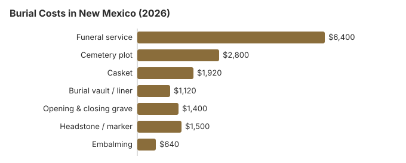

Burial Costs in New Mexico (2026)
For New Mexico families choosing burial in 2026, the honest pricing conversation starts with three numbers: the $6,400 funeral service average, the $2,800 cemetery plot average, and the $500-$5,000 headstone range. Add vault, opening-and-closing, casket and a headstone and the complete New Mexico picture runs $14,140 to $18,640.
Complete Burial Cost Breakdown
| Item | Average Cost | Range |
|---|---|---|
| Funeral service | $6,400 | $4,800 – $8,320 |
| Cemetery plot | $2,800 | $1,400 – $5,600 |
| Casket | $1,920 | $640 – $5,120 |
| Burial vault / liner | $1,120 | $800 – $10,000 |
| Opening & closing grave | $1,400 | $500 – $3,000 |
| Headstone / marker | $1,500 | $500 – $5,000+ |
| Embalming | $640 | $500 – $1,500 |
Methodology note: These figures are our estimates, not a survey of local providers, and they are not a quote or professional advice. See how we calculate them or read the full disclaimer.

The total cost of burial in New Mexico, including all cemetery fees, typically ranges from $14,140 to $18,640 depending on choices made.
Regional Context for Burial in New Mexico
New Mexico is geographically large and thinly populated outside of Albuquerque, which means rural counties often have only one or two cemetery options. That local scarcity makes up-front price confirmation especially important in New Mexico; you do not want to discover on the day of a service that the only accessible cemetery is $1,400 above your estimate. County clerk offices in New Mexico typically keep current plot fee schedules on file.
Burial Resources
- Funeral Consumers AllianceNonprofit consumer advocacy for funeral pricing
- Headstone & Monument GuideCosts, types, and buying tips
- Green Burial OptionsEco-friendly and natural alternatives
- Best Online Casket RetailersCaskets bought online often cost less
- Best Burial InsuranceCompare plans to cover burial expenses
Compare Funeral Costs
- Average Funeral Cost in 2026National cost breakdown with real prices
- Cremation vs. Burial Cost ComparisonSide-by-side price comparison to help you decide
- Funeral Cost BreakdownEvery line item explained: know what you're paying for
- Cheapest Funeral OptionsLower-cost alternatives, with typical price ranges
- Direct Cremation: Most Affordable OptionNFDA 2023 median $2,645 with a family-supplied container (latest available)
- How to Compare Funeral PricesStep-by-step guide to getting the best price
Spending Less on Burial in New Mexico
Burial costs in New Mexico can be managed with smart planning:
- Request itemized pricing from every provider: Funeral homes in New Mexico must provide a General Price List. Cemeteries are not required to, but most in the New Mexico area will share one if you ask specifically for the itemized price sheet rather than a "package."
- Confirm seasonal burial windows: At higher elevations in New Mexico, cemeteries may pause ground operations from November through April and hold remains in a vault until spring.
- County clerk for rural cemeteries: Sparse population in much of New Mexico means rural cemetery fee schedules often live only with the county clerk. A call to the county where burial will occur can surface options 40-60% below Albuquerque-area private cemeteries.
- Family or home burial where allowed: New Mexico has some of the more permissive family and home-burial laws in the country. Where this is an option, it can eliminate cemetery fees entirely while still meeting New Mexico legal requirements; our home funeral guide walks through the paperwork.
Kinds of Burial Available in New Mexico
Frequently Asked Questions
What is the full price of burial in New Mexico?
A full burial in New Mexico comes in at about $6,400 for the funeral service, $2,800 for the cemetery plot, $1,920 for a casket, $1,120 for a vault, $1,400 for opening and closing, and $500-$5,000 for a headstone. New Mexico totals generally land between $14,140 and $18,640 depending on choices.
Is a burial vault required in New Mexico?
Burial vaults are required by most cemeteries in New Mexico as a matter of cemetery policy (to prevent ground settling), though they are rarely mandated by state law. Vault costs in New Mexico typically range from $800 to $10,000.
What is the most affordable way to bury someone in New Mexico?
Direct burial is the lowest-cost path in New Mexico: it skips viewing, ceremony, and embalming. Green or natural burial is the next rung up, available at a growing number of New Mexico cemeteries with biodegradable containers and no embalming.
What is the best way to shop cemeteries in New Mexico?
Rural New Mexico cemeteries served by county clerks often price far below Albuquerque-area private cemeteries, and seasonal ground-closing windows at elevation can affect the interment timeline.
What is the total cost of burial in New Mexico including everything?
The first answer above lists each item; in New Mexico, cash advance items such as certified death certificates, an obituary notice and flowers are added on top of the $14,140 to $18,640 range.
Does New Mexico have green burial cemeteries?
There are green burial options in parts of New Mexico, though coverage is not statewide. Some New Mexico cemeteries have hybrid sections rather than fully dedicated grounds. Check our green burial guide and call local New Mexico cemeteries to confirm what they currently offer.
More for New Mexico
Burial rules and help in New Mexico
Funeral homes handling burials in New Mexico are licensed by the New Mexico Board of Funeral Services (505-476-4622). Cemetery sales in New Mexico may fall under a different office, so ask the board who oversees the cemetery you are considering.
Because the Funeral Consumers Alliance does not count New Mexico among the nine states that require a funeral director, a New Mexico family may arrange a burial without one; the cemetery still sets its own rules for the grave, and the burial permit must be in hand.
No cremation wait affects a burial, but if plans change to cremation, there is no fixed waiting period, though a permit is required (NMSA 61-32-19).
A New Mexico county can put up to $1,000 toward an indigent burial when the person left no estate; the county of residence pays, or the county where the body was found if residence is unknown (NMSA § 24-13-3). (Source: NMSA §§ 24-13-1, 24-13-3.) A surviving spouse or child may claim Social Security's one-time $255 death payment within two years; it is paid to them, not to the New Mexico cemetery.
For New Mexico veterans, the plot and marker in a national cemetery are free, which can remove thousands from a burial bill. In New Mexico, VA national cemeteries accepting burials: Fort Bayard National Cemetery (505-988-6400); Santa Fe National Cemetery (505-988-6400); state veterans cemeteries: Angel Fire State Veterans Cemetery (505-225-4341); Fort Stanton State Veterans Cemetery (505-205-6707); Gallup State Veterans Cemetery (575-921-3494) (source: VA National Cemetery Administration). The New Mexico Department of Veterans Services, which runs these cemeteries, also operates a fourth, Taos State Veterans Cemetery in Ranchos de Taos (505-470-3065), and lists its own numbers for Fort Stanton (505-383-4381) and Gallup (505-905-9770).
Next steps for a burial in New Mexico
- Price the New Mexico cemetery separately: plot, opening and closing, vault or liner, and marker are often sold apart from the funeral home.
- Ask the New Mexico cemetery for its rules on grave opening times, vaults and markers.
- Ask the New Mexico county of residence about indigent burial help before purchasing a plot.
- If the person served, ask Santa Fe National Cemetery what paperwork it needs, usually starting with the DD214 discharge record.
- Report a funeral home that misprices a burial to the board at 505-476-4622.